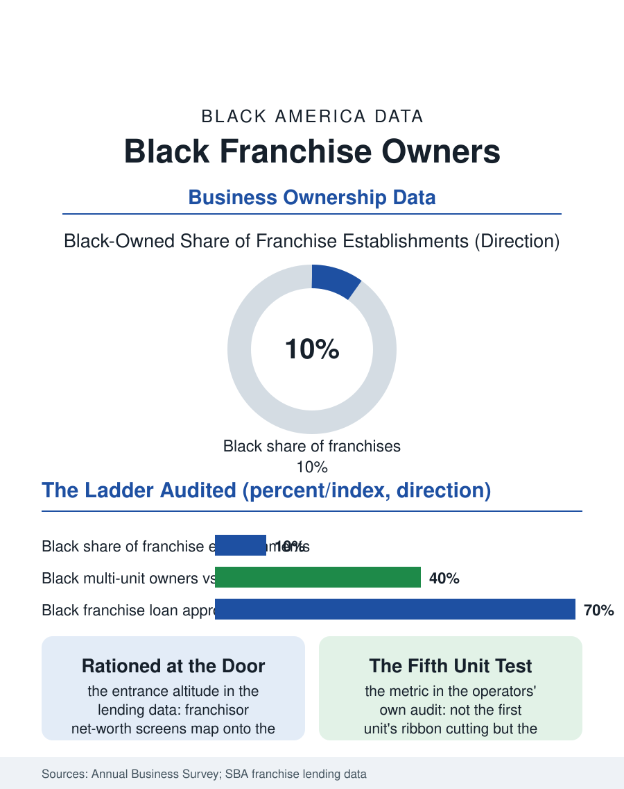

Black Business
The Escalator, Audited: Black Franchise Owners
Franchising built real fortunes at its top and a salary-with-risk at its median, rationed by the capital screens at its entrance. The franchise file.

Franchising was sold for two generations as Black America's escalator: buy the proven system, the brand, and the training, and convert wage discipline into ownership. The record in the census and the lending data is mixed and specific: Black franchise owners concentrate in the low-investment food and service concepts, finance their units at higher costs, and build multi-unit portfolios at lower rates than the system's promise implies. This article reads the franchise file.
The Ownership Ladder, Audited
The franchise model's arithmetic is the file's foundation: the operator buys a job with equity characteristics, the franchise fee and the build-out financed against the unit's projected cash flow, the royalty and advertising assessments running off the top line in all weathers. The International Franchise Association's and the census's data place Black ownership in the vicinity of a tenth of franchise establishments by the generous counts, concentrated by concept tier exactly as the capital data predict: the fast food majors' Black operator ranks, built deliberately by the corporations' minority operator programs of the late twentieth century, include genuine multi-unit portfolios of substantial value, the system's demonstrable top, while the median Black franchisee operates a single unit of a lower-tier concept, the cleaning, tax, and home service franchises whose fees the savings of a wage career can reach. The financing file decides the distribution: the SBA lending data show Black franchise borrowers approved at lower rates and at smaller amounts for the same concepts, and the net worth and liquidity screens the franchisors apply, formally neutral, map directly onto the wealth file's distribution, so that the escalator's entrance is located at an altitude the median Black household's balance sheet does not reach, and the operators who clear it arrive disproportionately from the professional and military pension files.
The Concept Ladder and the Ceiling
Within the system, mobility runs on the multi-unit ladder: the single unit yields a salary with risk, while the portfolio yields the wealth the pitch promises, and the ladder's rungs are allocated by the franchisor's area development decisions and the resale market, both relationship markets in which the Black operator's access the trade data track. The corporations' records are genuinely divided: a few systems built Black operator associations of real power and pipelines that produced the file's success stories, the operators whose dozens of units employ thousands, while the industrywide picture in the association data shows the Black share of multi-unit ownership well below the single-unit share, the ladder narrowing by race at exactly the rung where the wealth begins. The contract's fine print carries the file's cautions: the territory, the renewal, and the transfer provisions whose exercise has ended Black portfolios at the franchisor's discretion in the litigated cases the trade press records, and the resale discount at which Black-owned units change hands in the broker data, the ownership's terminal value discounted by the same market that discounted its financing. The newer concepts, the fitness, wellness, and home service brands of the current franchise boom, recruit the Black professional class with the diversity pitch the file has learned to audit, and the audit's questions are the operators' own: the item 19 earnings claims, the Black operators' unit economics specifically, the association's independence, the exit histories.
The Escalator, Repriced
The franchise file closes with the balanced ledger its data support. The escalator is real at the top: no other route in the business section has produced as many Black fortunes of the eight-figure class from wage beginnings, and the operator associations' elders are the proof. The escalator is also rationed at the entrance and narrowed at the middle rungs by the capital and relationship distributions the data measure, and the median outcome is the single unit's salary-with-risk, a legitimate middle-class asset and not the wealth machine of the pitch. The policy file's levers are the financing ones, the SBA programs' reach, the community lenders' franchise funds, and the franchisors' own operator pipeline commitments, whose sincerity the file's metric settles: not the first unit's ribbon cutting but the fifth unit's financing, which is where the escalator's promise is kept or broken. The census counts the establishments and the payrolls. The file's final measure is generational: the operator's child, educated on the first unit's cash flow, choosing the family's fifth unit or the profession the units financed, both outcomes being, in the ledger the owners themselves keep, the escalator having worked.
More in Black Business
Black-Owned Businesses: Counts, Receipts, and the Representation Gap
About 161,000 Black-owned employer firms and three million solo ventures: how the Census Bureau counts Black business ownership, where firms concentrate, and the gap between population share and business share.
Black Median Net Worth: The Wealth Gap in Federal Reserve Data
The Federal Reserve puts Black median family net worth at $44,900, against $285,000 for White families — about 16 cents on the dollar. The widest gap in economic data.
Black Buying Power: The $1.8 Trillion Consumer Economy
Black buying power is estimated at about $1.8 trillion — larger than the economy of most nations. What the figure measures, who produces it, and what it buys.
Source: U.S. Census Bureau, Annual Business Survey franchise data; Small Business Administration franchise lending analyses; International Franchise Association reports.